딥러닝 기초
치와와와 머핀을 구분하는 인공지능 만들기
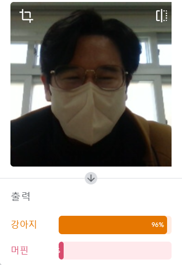
◆ 인공지능의 구분
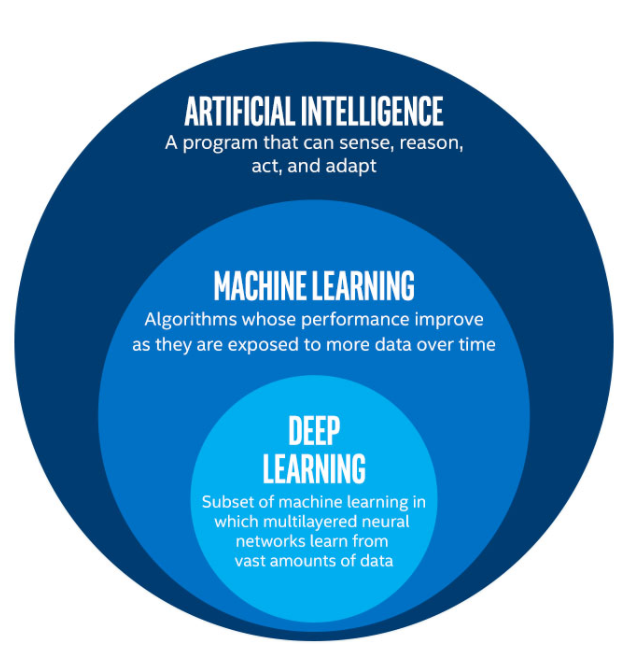
-
인공지능 (AI)
지각, 추론, 학습할 수 있는 프로그램
-
머신러닝 (ML)
데이터를 기반으로 학습시켜 성능을 향상시키는 방법
-
딥러닝 (DL)
인공신경망의 층을 깊게(deep) 쌓아서 복잡한 패턴을 학습시키는 방법
◆ 고전적 인공지능
규칙 기반 AI
A를 하면 → B를 하고
C를 하면 → D를 한다
(인간이) 정한 규칙대로 동작
실제로는 매우 정교한 규칙을 만들 수 있지만, 아무리 정교해도 사람이 미리 정한 범위 안에서만 동작합니다
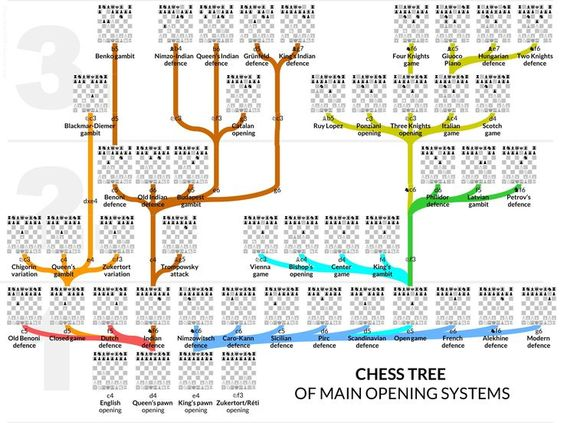
체스 오프닝 의사결정 트리
❔ 강아지? 머핀?
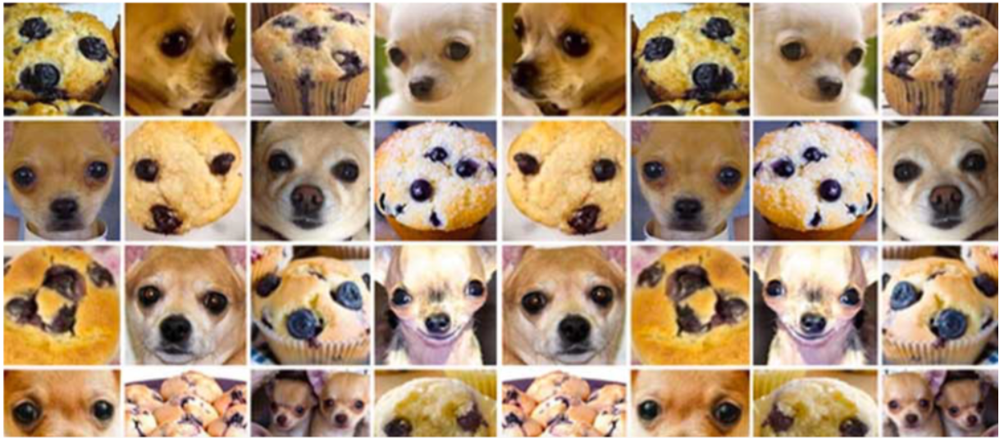
구분할 수 있겠어요?
❔ 강아지? 머핀?
머신러닝/딥러닝의 접근법
인공지능이 데이터를 학습한 대로 판단합니다
*딥러닝은 신경망의 여러 층을 활용한다는 차이가 있습니다
⚖ 고전적 인공지능 vs 머신러닝·딥러닝
- 어떻게 동작하는지 사람이 정해줘야 함
- 체스는 가능했지만, 바둑은 경우의 수가 너무 많아 같은 방법으로는 한계가 있었다
- 재료(데이터)와 몇 가지 조건을 주면 어떻게 동작할지 스스로 결정
- AlphaGo강화학습, ChatGPT자기지도+강화
이들은 모두 데이터를 기반으로 학습하지만, 학습 방식은 서로 다릅니다
✶ 딥러닝의 핵심 — 인공신경망
층(Layer)을 깊게(Deep) 쌓을수록
→ 더 복잡한 패턴을 학습
이것이 바로 "딥"러닝!
✶ 머신러닝의 학습 방법
지도학습
정답을 알려주고 학습
예: "이것은 치와와, 이것은 머핀"
오늘 실습!비지도학습
정답 없이 스스로 패턴을 찾음
예: 비슷한 사진끼리 자동 분류
강화학습
시행착오를 통해 보상을 최대화
예: AlphaGo(바둑 자가대국)
오늘 실습에서는 지도학습을 체험합니다!
➤ 우리가 만들 AI는 어디에 해당할까?
-
Teachable Machine 안에는 이미 수백만 장의 이미지로 학습된 딥러닝 모델(MobileNet)이 들어있습니다
-
여러분은 그 모델 위에 '치와와인지 머핀인지'만 추가로 학습시킵니다
-
이 방법을 전이학습(Transfer Learning)이라고 합니다
이미 '보는 법'을 아는 AI에게 '무엇을 볼지'만 가르치는 것!
✍ 치와와-머핀 구분하는 인공지능 만들기
준비물
링크를 클릭하거나, 선생님이 공유한 주소로 접속하세요
➤ 실습 순서
접속
프로젝트 생성
(치와와 / 머핀)
업로드
학습시키기
결과 확인
각 단계를 차근차근 따라가 봅시다!
✶ 치와와-머핀 구분하는 인공지능 만들기
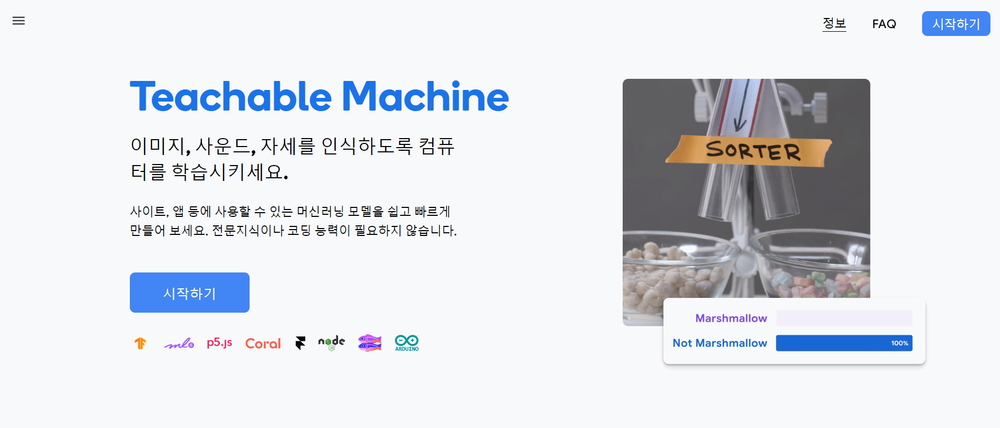
시작하기 버튼을 클릭합니다
teachablemachine.withgoogle.com
✶ 치와와-머핀 구분하는 인공지능 만들기
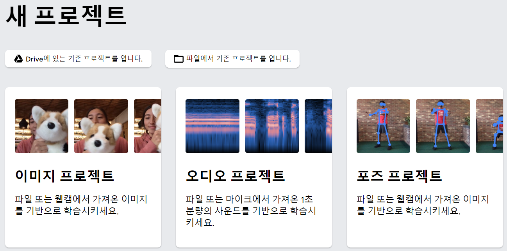
이미지 프로젝트를 선택합니다
✶ 치와와-머핀 구분하는 인공지능 만들기
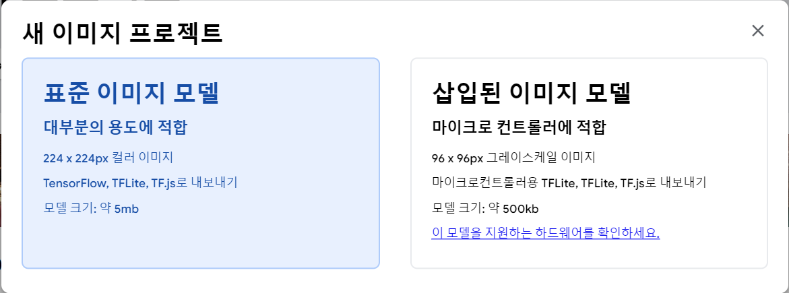
표준 이미지 모델을 선택합니다
표준 이미지 모델: 224×224px 컬러 이미지, TensorFlow.js로 내보내기 가능
✶ 치와와-머핀 구분하는 인공지능 만들기
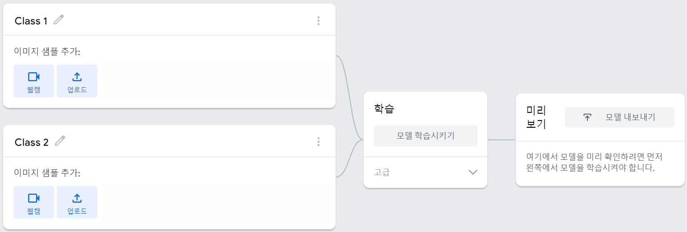
☝ Class 1 → 치와와 입력
☝ Class 2 → 머핀 입력
이렇게 학습시키는 내용을 미리 알려주고 학습시키는 방법을 지도학습이라고 합니다
*알려주지 않고 학습하는 방법은 비지도학습, 시행착오로 학습하는 방법은 강화학습
✶ 치와와-머핀 구분하는 인공지능 만들기
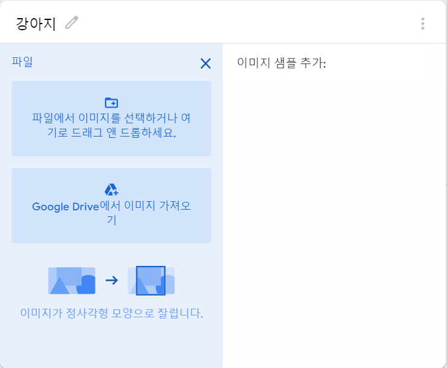
파일 업로드 버튼 클릭
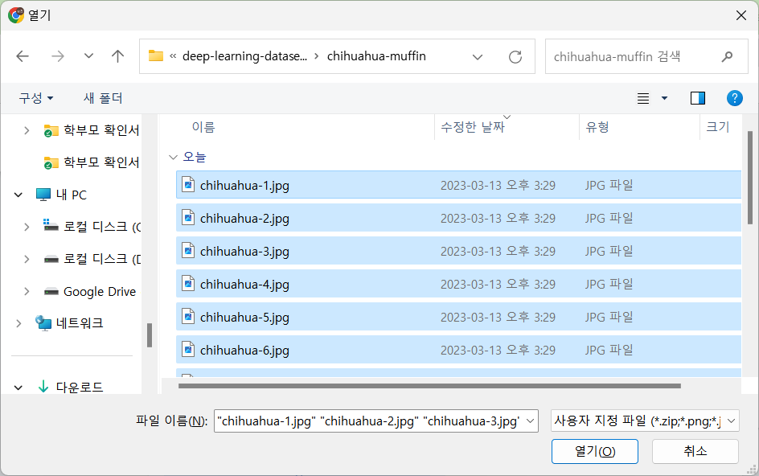
치와와 이미지 모두 선택
다운 받은 사진 중 치와와 사진을 모두 넣어줍니다
✶ 치와와-머핀 구분하는 인공지능 만들기
마찬가지로 머핀 사진도 넣어줍니다
✶ 치와와-머핀 구분하는 인공지능 만들기
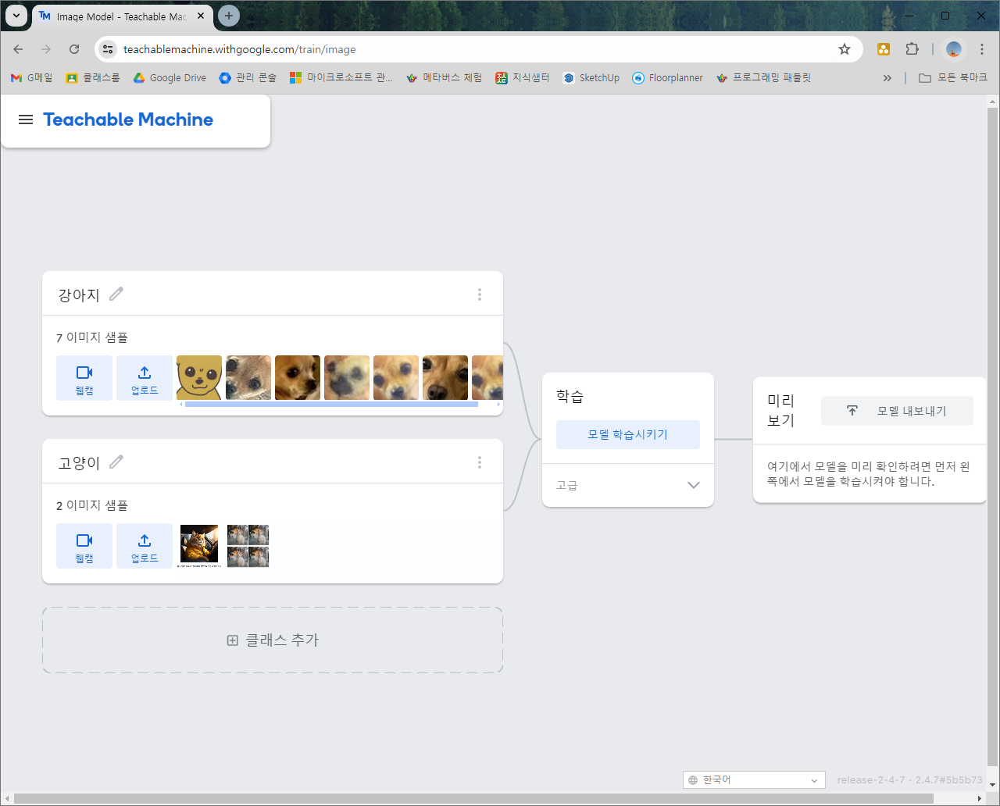
모델 학습시키기 버튼을 클릭합니다
⏳ 잠시 기다리면 학습이 완료됩니다
✶ 치와와-머핀 구분하는 인공지능 만들기
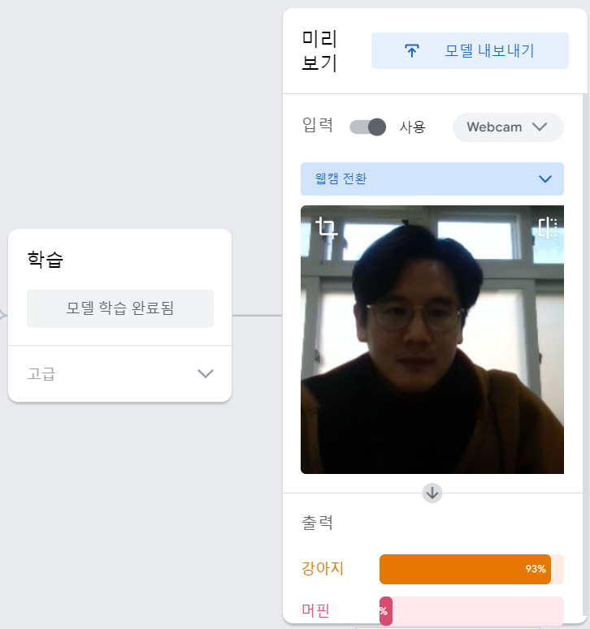
학습이 완료되면 미리보기 영역에서 웹캠으로 바로 테스트할 수 있습니다
선생님도 강아지로 분류되었습니다 🐶
✶ 치와와-머핀 구분하는 인공지능 만들기
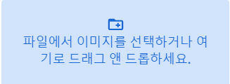
입력을 파일로 전환한 뒤, 테스트하고 싶은 사진을 선택합니다
- 인터넷에서 3장의 치와와 사진을 찾아서 적용해 보고
- 그 결과를 캡처해서 활동지에 제출!
❓ 생각해 봅시다
테스트한 3장 중 틀린 경우가 있었나요? 왜 틀렸을까요?
→ 데이터 품질, 유사한 특징
학습 이미지를 더 많이 넣으면 결과가 달라질까요?
→ 데이터 양과 정확도의 관계
이 AI에게 고양이 사진을 보여주면 어떻게 될까요?
→ 학습하지 않은 클래스의 한계
이미 학습된 모델(MobileNet)이 없었다면, 이미지 몇 장으로 학습이 가능했을까요?
→ 전이학습의 가치
오늘 배운 것
핵심 키워드 정리